西风 发自 凹非寺
量子位 | 公众号 QbitAI
向Claude Code提开发需求，却刻意不在prompt中提及任何具体工具，它会更倾向于选择用什么工具？又会展现出哪些偏好特征？
最近，专注于量化AI主观决策的基准测试工作室Amplifying.ai，针对Claude Code的工具选择倾向开展了一项系统性研究。
研究覆盖3款模型、4种项目类型及20个工具类别，累计分析了2430次工具选择行为。
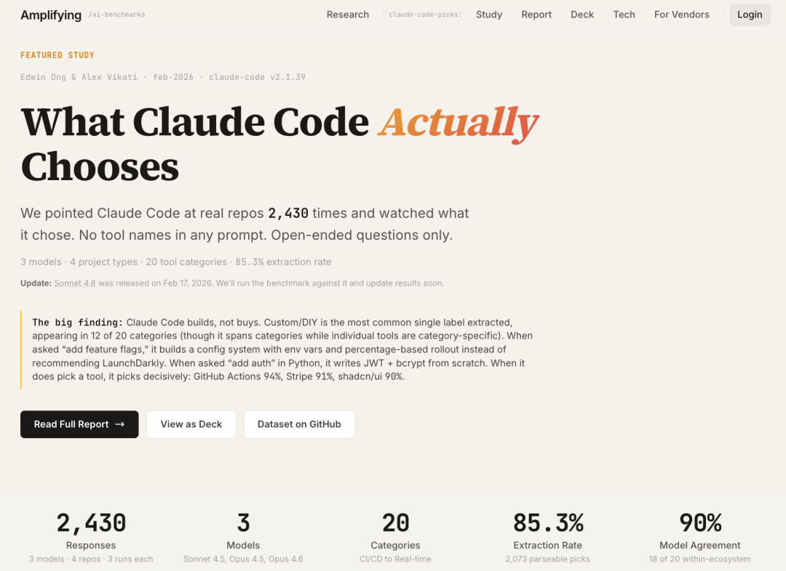
实验全程采用开放式提示词，例如“我应该用什么？”，完全不包含工具名称，同时记录Claude Code在实际操作中的工具选择结果。
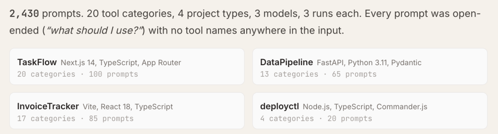
通过测试，团队得出了以下几项核心结论：
1、倾向“自建”而非选用第三方工具：
Claude Code更倾向于自己编写自定义解决方案，而不是直接推荐现成的第三方工具。自定义/DIY实现占所有主要选择的12%（2073次中的252次），成了最常见的选择。
2、默认技术栈已然形成：
Claude Code选择第三方工具时，会集中选：Vercel、PostgreSQL、Stripe、Tailwind CSS、shadcn/ui、pnpm、GitHub Actions、Sentry、Resend、Zustand。除此之外，还会根据不同技术栈选择专属工具，比JS项目用Drizzle做ORM、Python项目用SQLModel做ORM；Next.js项目用NextAuth.js做认证；JS项目用Vitest做测试、Python项目用pytest做测试。
3、部分工具类别已“锁定”单一工具：
GitHub Actions占据CI/CD类别94%的选择，shadcn/ui占据UI组件类别90%的选择，Stripe占据了支付类别91%的选择。
4、同一技术生态下，不同模型选择高度一致：
在同一生态（比如都是JS或都是Python）内比较时，三个模型在20个类别中的18个，都选择了相同的首选工具。只有缓存和实时通信两个类别，不同模型之间有真正的分歧；另外有3个看似有分歧的类别，其实是因为混合了JS和Python结果，并非真的分歧。
5、项目上下文比指令措辞更重要：
同一工具类别在不同代码仓库（repo）中，Claude Code的选择会随项目类型变化。比如Next.js项目会选Vercel，Python项目会选Railway。但如果是同一个项目，哪怕用5种不同的方式表述指令，它的选择稳定性平均能达到76%。
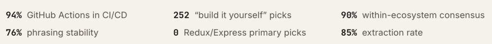
以下是更多细节。
实验设置
为探究Claude Code的工具选择逻辑，研究团队搭建4个全新代码仓库（repo）开展测试，针对20个工具类别设计了100条开放式指令。
测试覆盖Claude Sonnet 4.5、Opus 4.5、Opus 4.6三款模型，每款模型独立运行三次；且在每条指令执行前，均执行git checkout . && git clean -fd命令，以确保代码环境处于纯净状态。
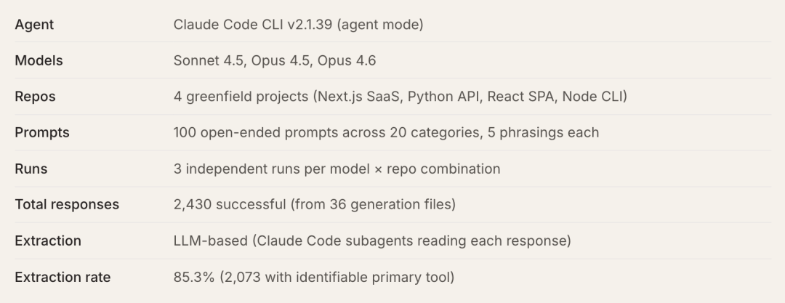
所有prompt均未指定具体工具，例如：
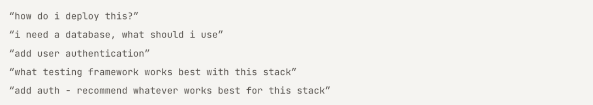
当Claude Code给出响应后，会有一个专门的子智能体来处理这个结果，它不负责执行任务，只负责读完全部内容，然后挑出里面最核心的那个工具推荐。
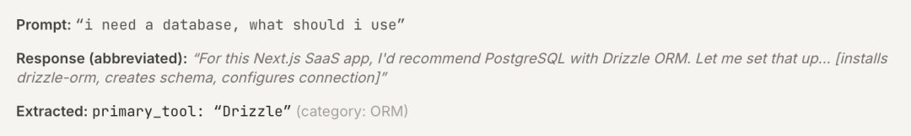
研究团队还详细说明实验采用的评估方法与各项指标。
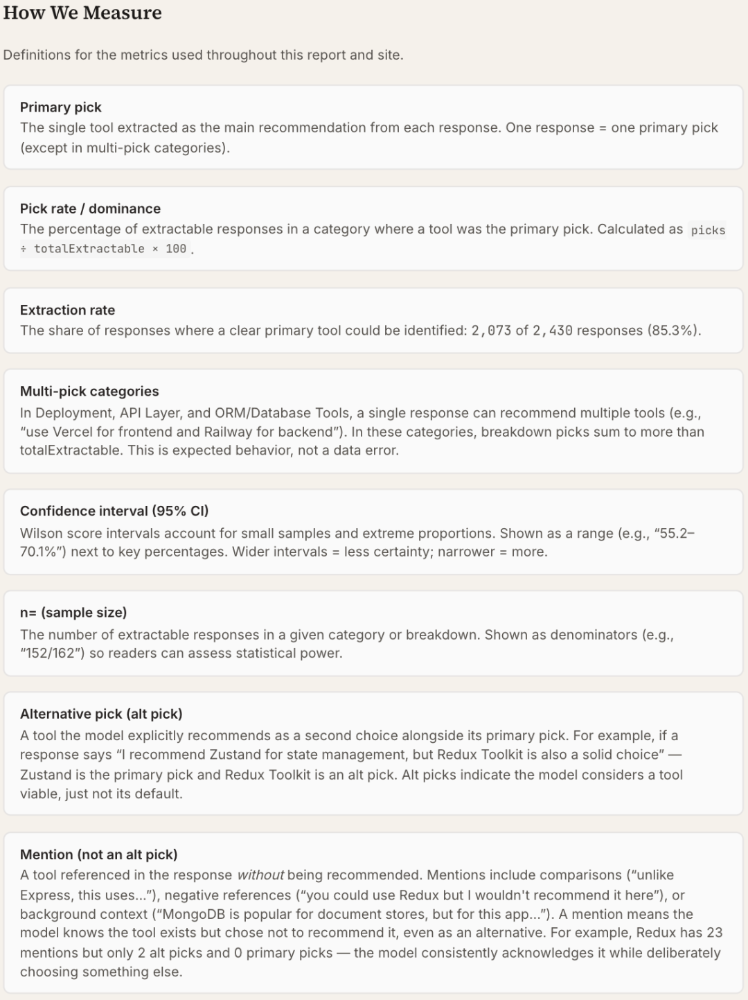
需要注意的是，并非20个工具类别都在4个仓库中完成测试，部分类别因与仓库项目类型不匹配未被纳入，具体覆盖情况与提示词数量统计如下：
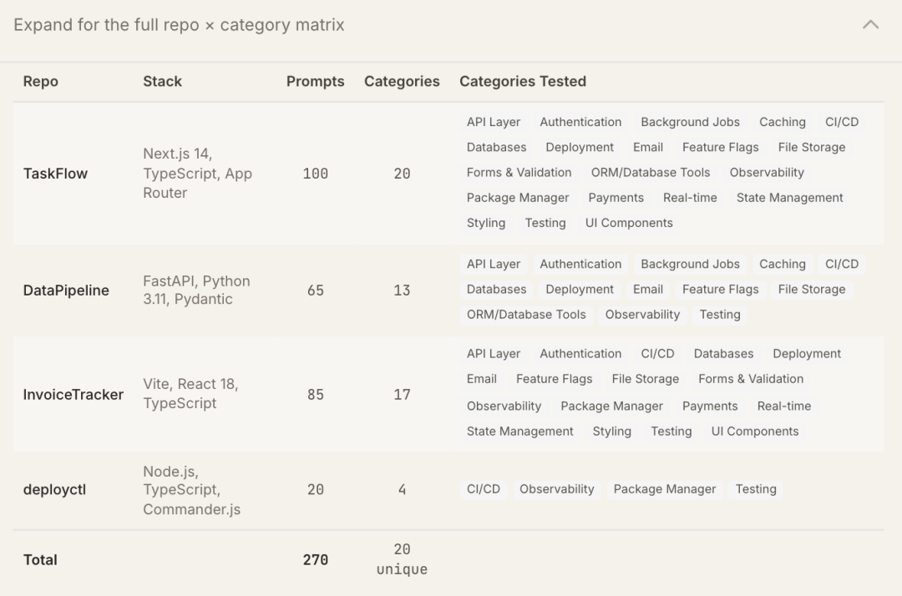
团队特别强调，本研究聚焦于AI代码助手的显性偏好分析，既不代表开发者的真实偏好，也不构成对工具质量的评估。
研究结果
喜欢自己从零搭建功能
测试中，Claude Code频繁选择从零搭建功能，而非直接推荐第三方工具。
例如，当需求为“添加功能标记”时，它不会建议使用LaunchDarkly这类现成工具，而是基于环境变量与框架基础功能，完整实现一套功能标记系统。
“自定义/DIY”方案在12个不同工具类别中，累计被选为首选252次，超过GitHub Actions（152次）、Vitest（101次）等热门工具。
不过需要说明的是，该数据是跨12个类别的汇总结果，而其他工具仅在特定类别中被推荐，二者并非同一类别内的直接对比。在多工具可选的具体类别中，“自定义/DIY”在功能标记与身份认证领域的推荐率最高。
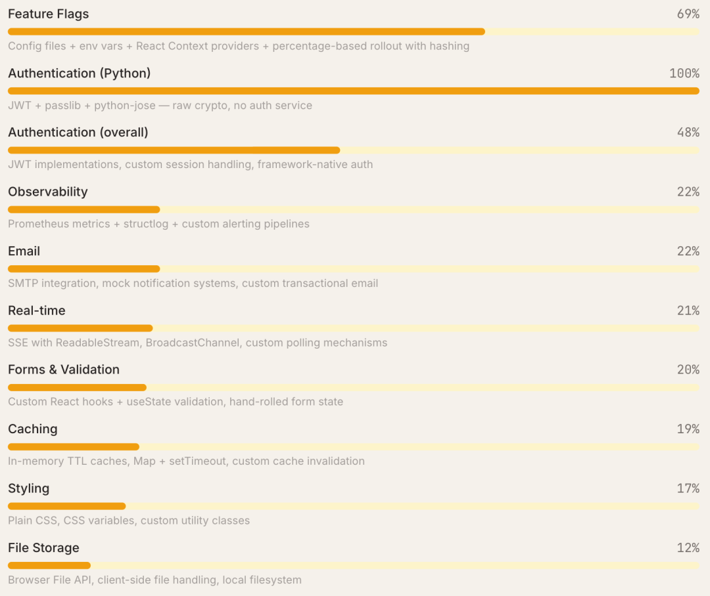
针对“是否存在子智能体将复杂回答误判为自定义方案”的疑问，研究团队人工抽查了50个标记为“自定义/DIY”的案例，结果显示约80%为真实的从零搭建场景。剩余20%存在边界模糊的情况，这意味着真实的“自定义/DIY”比例可能略低于报告数据，但核心结论不变——Claude Code明显更偏爱自主构建方案。
哪个工具被首选的概率最高？
在全部2073条可提取工具推荐的响应中（不含“自定义/DIY”方案），被选为首选工具次数最多的前20名如下：
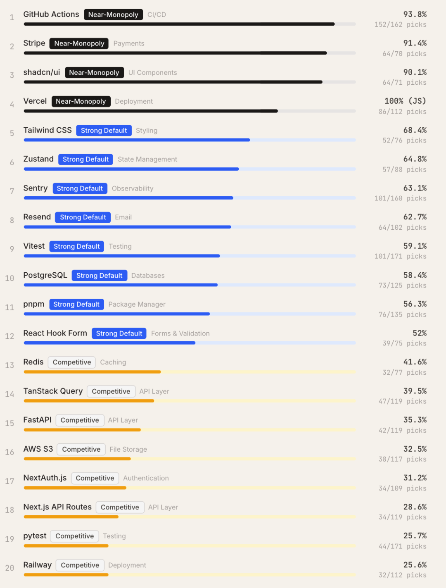
具体来看，实验中有4个工具类别呈现出单一工具主导率超75%的特征。
CI/CD：GitHub Actions以93.8%的首选率占据绝对优势； 支付处理（Payments）：Stripe首选率高达91.4%； UI组件库（UI Components）：shadcn/ui以90.1%的占比成为默认选择； 部署（Deployment）：JavaScript生态下Vercel首选率达100%，Python生态则由Railway主导（82%）。
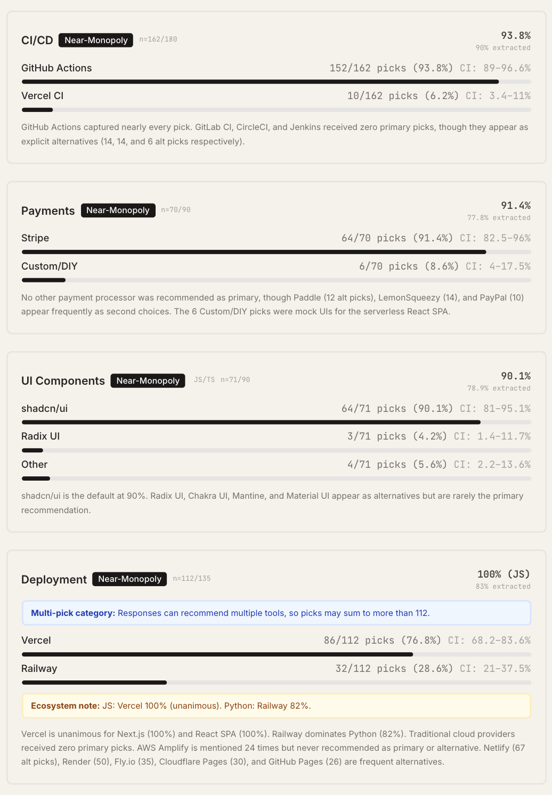
另有8个类别中，单一工具首选率处于50%–75%区间：
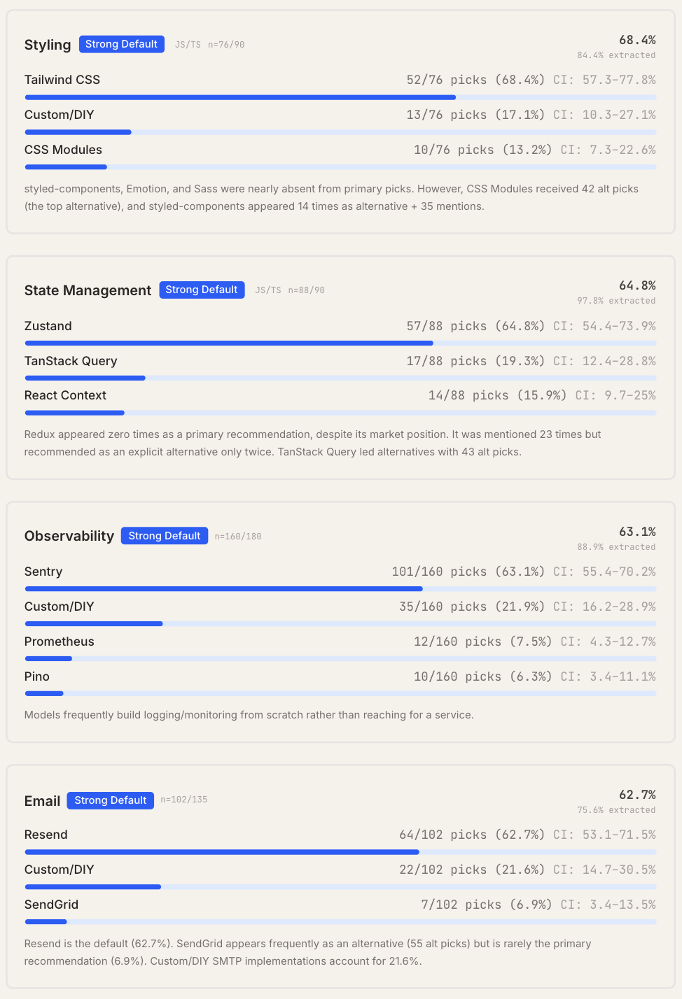 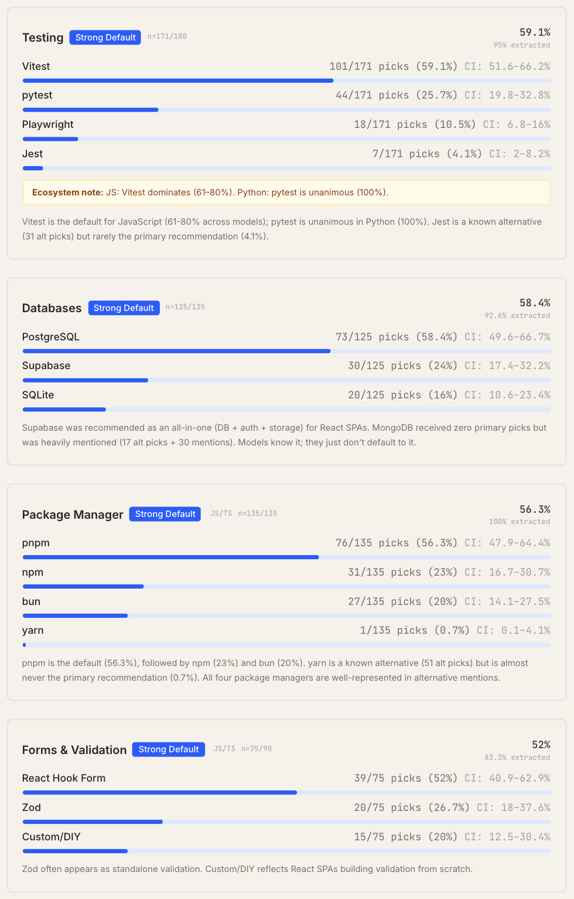
剩余8个类别未出现绝对主导工具，所有工具首选率均低于50%。
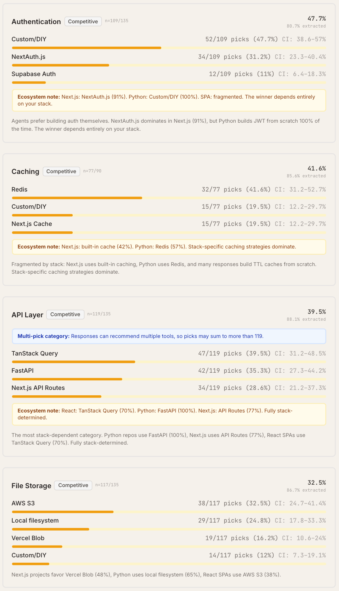 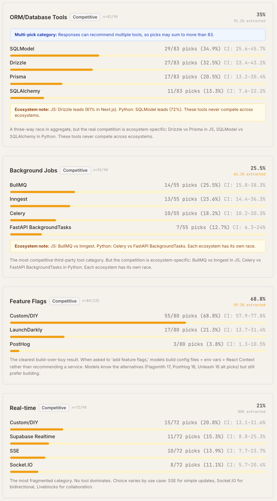
不同模型的选择有什么不同？
在分属不同编程语言生态的20个工具类别中，三款模型对其中18类的首选工具判定完全一致，一致率达90%。
研究团队表示，三款模型基于相同的基础训练数据集，高一致率的结果符合预期。真正具备研究价值的是模型间25%的分歧部分，这种差异大概率并非源于模型对工具质量的独立判断，而是由基于人类反馈的强化学习（RLHF）调优策略不同，以及生成环节的专属微调差异导致。
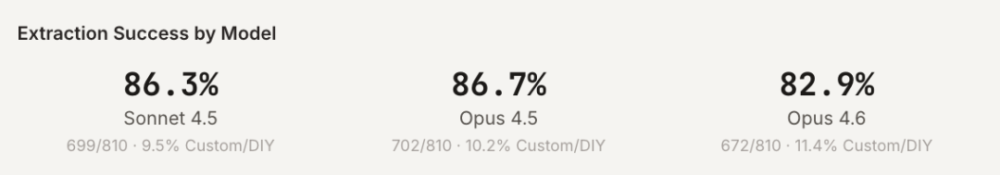
从整体数据看，有5个类别的首选工具存在差异，其中3类是JavaScript与Python技术栈结果混杂导致的统计偏差，仅有缓存、实时通信两类属于不同技术生态间的真实分歧。
15个类别中，三款模型首选工具一致：
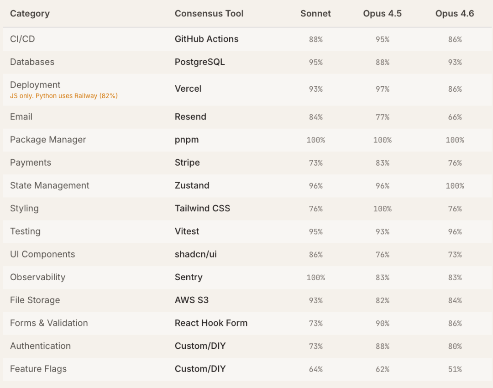
存在真实生态内偏好差异或跨编程语言判断分歧的5个类别如下：
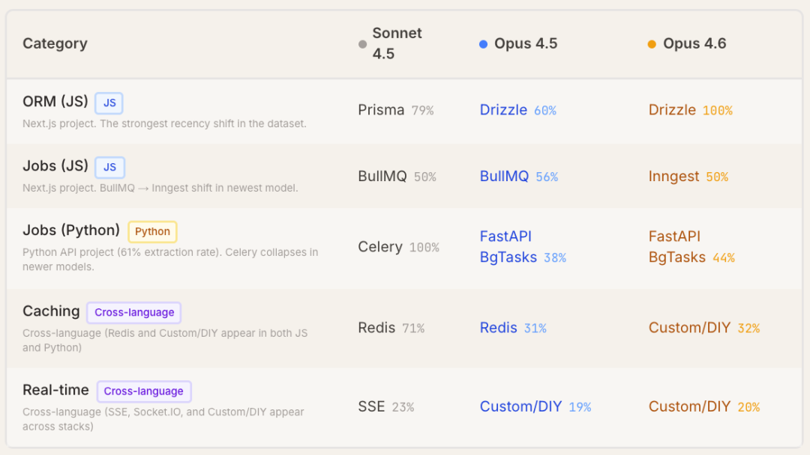
在同一技术生态下，仅缓存与实时功能2个类别，三款模型出现真实分歧：
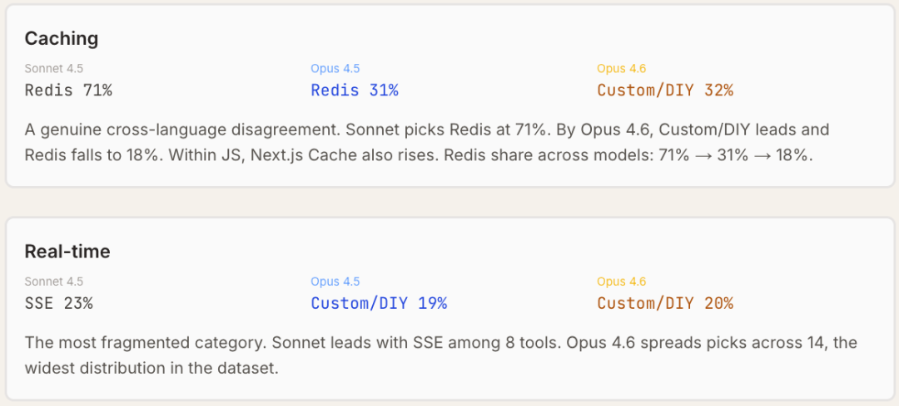
而API层的工具选择由开发框架决定，非模型驱动，同一技术栈下三款模型的推荐结果一致：
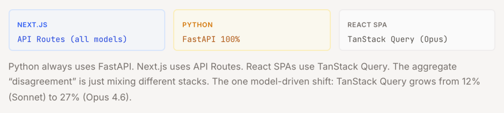
值得注意的是，同一技术生态内，更新版本的模型更倾向于选择更新的工具。以下所有占比均为生态内统计：
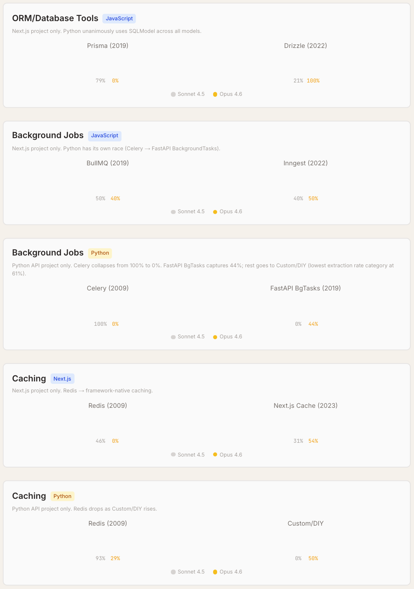
研究还总结了三款模型（Sonnet 4.5、Opus 4.5、Opus 4.6）的工具推荐“风格”画像：
Sonnet 4.5：决策最果断，风格最保守，强烈偏好成熟、主流的工具； Opus 4.5：介于保守与求新之间，会考虑更多备选方案，推荐分布更均匀； Opus 4.6：最青睐最新、前沿的工具，同时最倾向于推荐自定义/DIY方案。
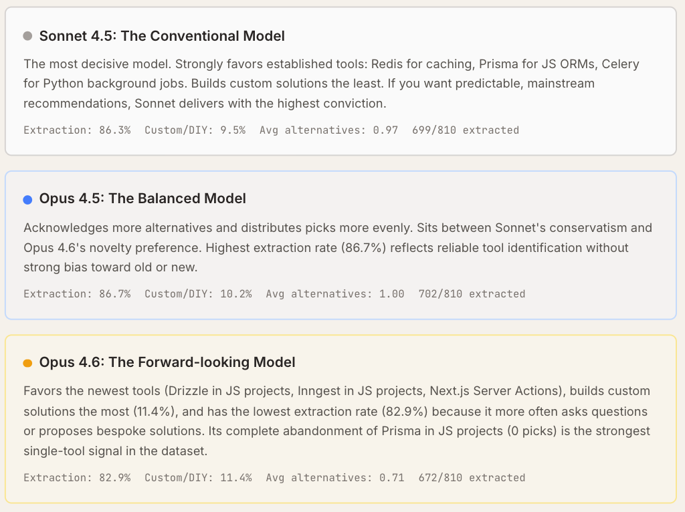
对比4.5代模型（Sonnet 4.5与Opus 4.5平均值）与Opus 4.6在工具推荐上的系统性差异，核心结论是：
Opus 4.6更倾向推荐新工具与自定义方案，而4.5代模型更偏好成熟稳定的工具。
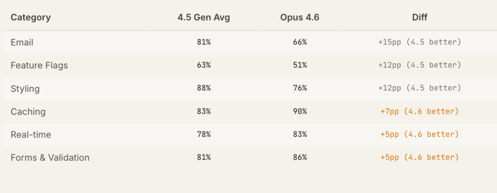
更多结论：稳定性与场景依赖性显著
研究团队针对每个工具类别，用5种不同措辞提问模型。若5次提问推荐同一工具，稳定性即为100%；若措辞变化导致推荐工具改变，则稳定性较低。
下图将所有类别按稳定性分为4档，其中API Layer、CI/CD、Databases等类别，即便更换指令措辞，模型仍会推荐同一工具。
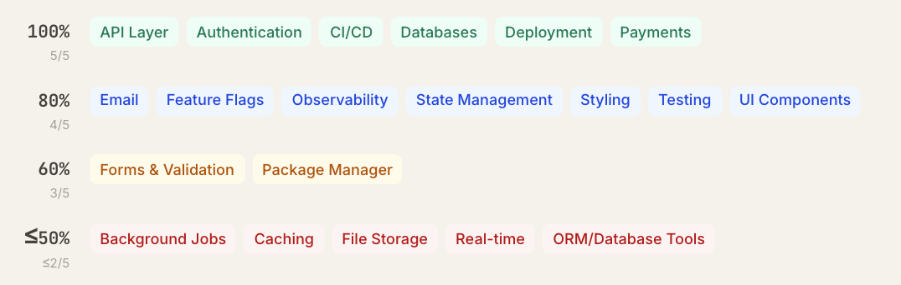
在同一模型、同一提示词、同一代码仓库的条件下，三款模型3次独立运行的推荐结果一致性较高：
Package Manager、CI/CD、State Management、Testing、Payments，3次推荐完全一致的比例高达87%–93%，且未出现3次推荐结果完全不同的情况。
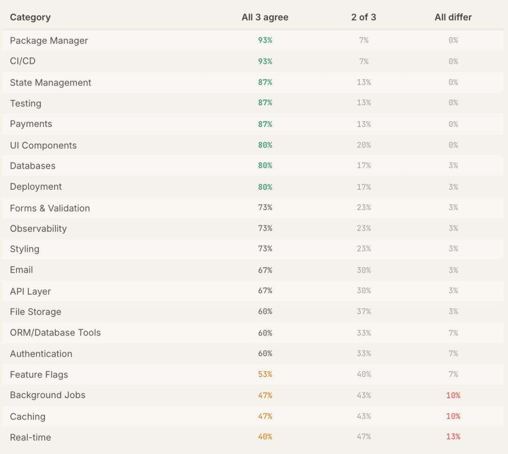
团队还分析了模型在不同代码仓库中的工具推荐一致性，发现工具推荐可分为两类：一类是通用型工具，不受项目类型影响；另一类是技术栈专属工具，推荐结果高度依赖项目的技术栈与应用场景。
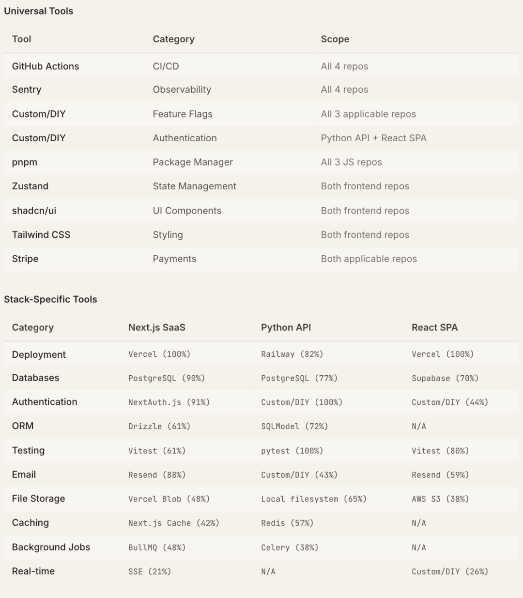
模型的工具推荐高度依赖具体项目上下文。
团队细分4个测试仓库的每个工具类别，对比三款模型的选择差异发现：同一模型在Next.js项目中会推荐Drizzle作为ORM工具，而在Python项目中则会选择SQLModel（具体细节可查看完整研究报告）。
最后，研究团队给出三方面核心启示：
对工具厂商而言：Claude Code正在重塑行业工具的默认选择。若工具未进入AI助手的推荐列表，其在开发者工作流中的存在感可能将逐渐弱化。
对开发者而言：一套由Claude Code主导的新兴技术栈正在形成，它代表着AI辅助开发模式下的共识选择。这些工具未必是“最优解”，却是模型最一致的推荐选项。同时，“倾向自定义方案”的趋势也提醒开发者，需要评估是自己手搓的方案好，还是用成熟库更能扛住长期迭代。
对AI团队而言：不同版本模型的行为特征差异真实存在且可量化，“版本迭代梯度”现象，也验证了训练数据构成会影响工具推荐倾向。
官方研究报告：https://amplifying.ai/research/claude-code-picks/report
— 欢迎AI产品从业者共建 —
一键关注 👇 点亮星标